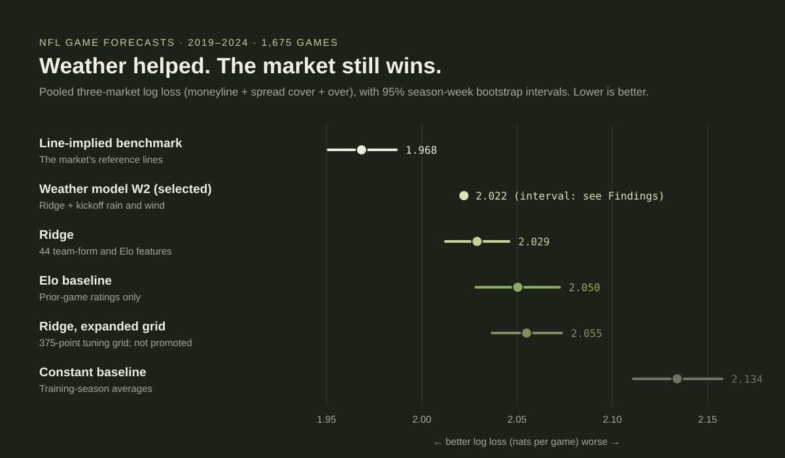

NFL / IN PROGRESS / UPDATED NOVEMBER 2026
NFL Game Forecasting Model
Kickoff rain and wind improved its totals. It still trails the market, and I say so.

Overview
Can prior-game team performance and game conditions forecast NFL scoring margins and totals better than Elo ratings, and how close can that get to the betting market? A more complex model can beat a simple baseline without giving any betting edge, so every test is written down before the model is fit.
The data combines nflverse schedules, final scores, reference spread and total lines, nflfastR play-by-play features and kickoff weather. Each season from 2018 to 2024 is predicted using only earlier seasons for fitting and tuning. The pooled comparison covers 1,675 games from 2019–2024; 2018 is reported separately, and 2025 is locked as a final holdout.
Separate ridge regressions predict home margin and total from 44 registered team-form and Elo features. A discretized normal turns those into moneyline, spread-cover and over probabilities. A new model only replaces the current one if the paired bootstrap interval (10,000 season-week resamples) for the pooled three-market log loss sits entirely below zero, and no single market gets worse. When several candidates are tested together, a Holm correction applies.
Ridge beat Elo and a constant baseline but trailed the line-implied benchmark in all three markets. A larger tuning grid made it worse, and five quarterback feature sets were all rejected. The first upgrade came from weather: adding a rain flag and kickoff wind speed (W2) beat ridge under the preregistered rule, with almost all of the gain on over/under. The weather plan was written before any model was fit, and it states that rain and wind had already been looked at against totals, so 2025 cannot serve as a clean confirmation.
This modeling work is being brought into my NFL scouting site, where its predictions sit next to the sportsbook lines. The site already shows an Elo win probability beside the market’s for every game, locks it before kickoff and grades it afterward; the weather model is being connected to the site’s weekly forecast updates.
Findings
Pooled three-market log-loss difference, nats per game. 2019–2024, 1,675 games. Negative favors the first model.
| Comparison | Estimate | 95% interval |
|---|---|---|
| Rain and wind improved the modelW2 (ridge + rain + wind) minus ridge | -0.0069 | -0.0111 to -0.0031 |
| Ridge improved on EloRidge minus Elo | -0.0215 | -0.0338 to -0.0094 |
| Ridge underperformed the line-implied referenceRidge minus line-implied benchmark | +0.0606 | +0.0423 to +0.0787 |
| Expanding the tuning grid worsened the candidate375-point grid minus original 99-point ridge | +0.026 | +0.0174 to +0.0348 |
- Rain and wind improved the model. Promoted (Holm-corrected p < 0.0001). The gain is almost all on over/under (−0.0074, interval −0.0114 to −0.0036); moneyline and spread are unchanged. A five-input weather version (W1) also passed at −0.0063; W2 had the lower loss.
- Ridge improved on Elo. Development comparison; 2018 excluded. Unchanged under all three garbage-time settings.
- Ridge underperformed the line-implied reference. Reference bookmaker and capture time unknown; not a decision-time price or profitability test.
- Expanding the tuning grid worsened the candidate. Adaptively proposed after observing the original grid edge; not promoted.
Ideas tested and dropped
- Quarterback features: five candidate feature sets, none promoted (best Holm-adjusted p 0.56).
- Quarterback-change Elo carryover: a 10-minute check on stored predictions found no weakness to fix in weeks 1–4 for teams that changed quarterbacks (moneyline gap −0.003, interval −0.045 to +0.039, 220 games), so the 3-hour build was skipped.
- Close games versus blowouts (descriptive): ridge’s predicted margin was closer than the closing line in 54% of games decided by 8 or fewer points (890 games), but in only 32% of blowouts of 17 or more (433 games). Games are grouped by final margin, so this is descriptive only.
Limitations and what’s left
- These are development results: no profit, ROI, closing-line value or betting edge is claimed. The model still loses to the market overall.
- The 2025 holdout is still locked for a single final evaluation.
- The model learned from weather recorded at kickoff, but live predictions use forecasts. The live version logs forecast and kickoff weather side by side to track that gap.
- Kickoff temperature and wind were missing for 46% of outdoor games in 2022 and 21% in 2023; they were filled from each game’s gamebook text, leaving 11 values missing.
- Reference lines have an unknown bookmaker and capture time, so this is not a test against decision-time prices.
- 2018 uses default settings and in-sample sigma and is left out of pooled comparisons.
- The EPA model’s training years overlap the evaluation years, and early training samples are small.